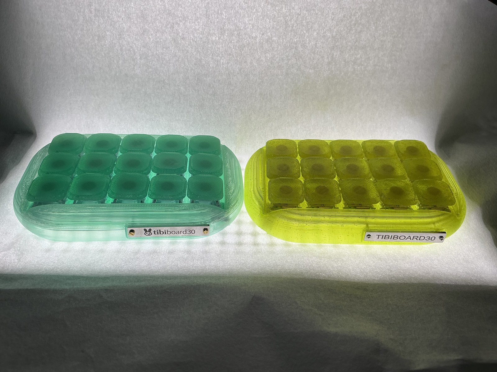
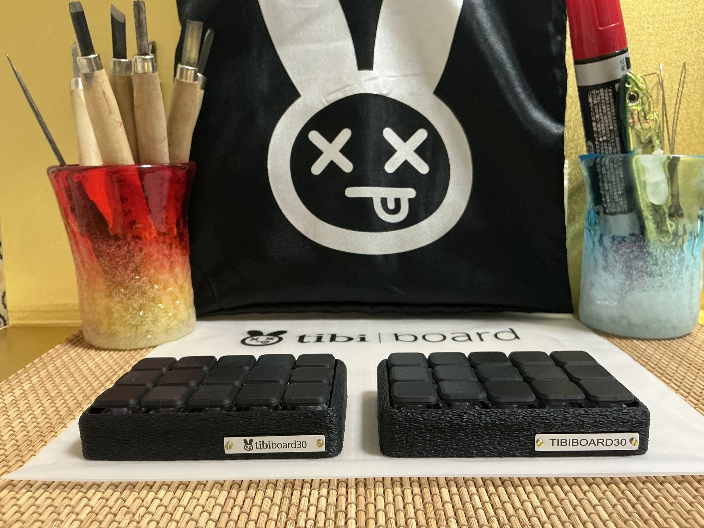
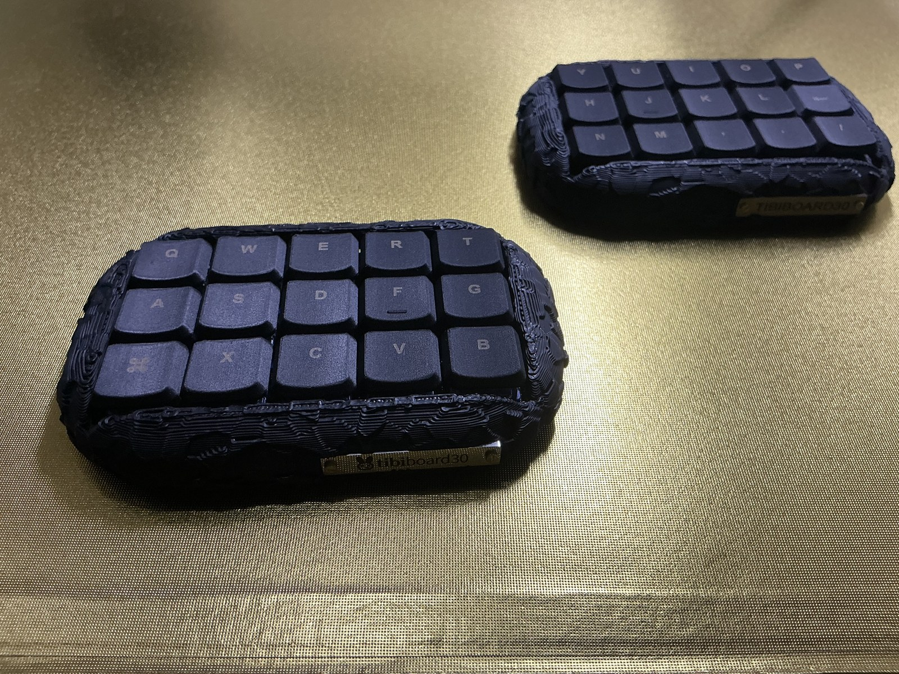
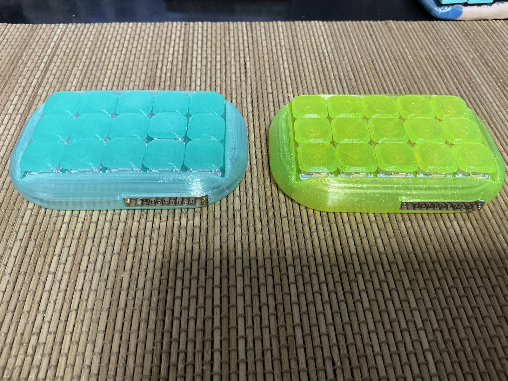
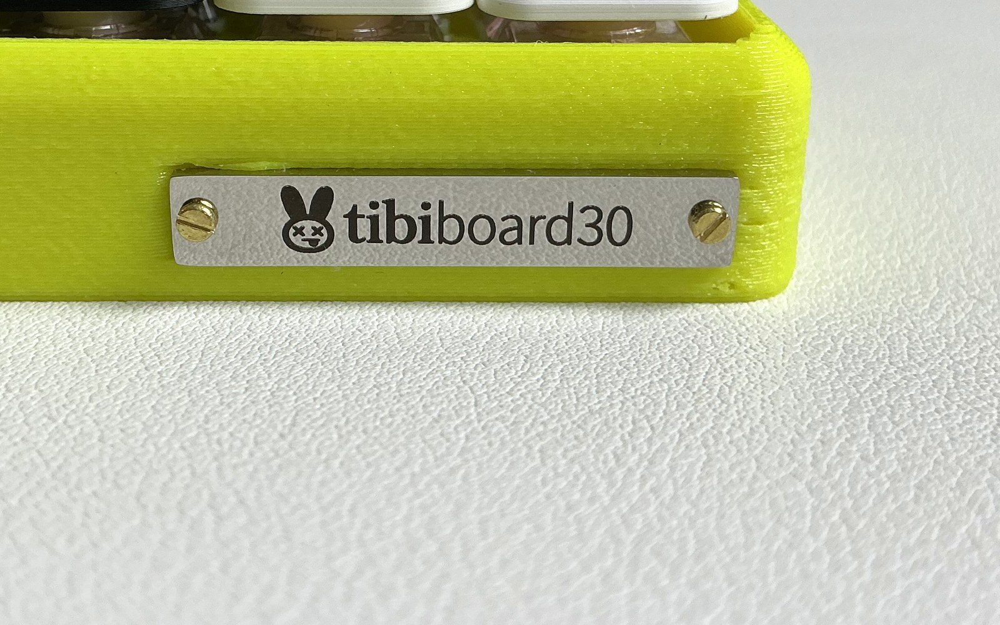
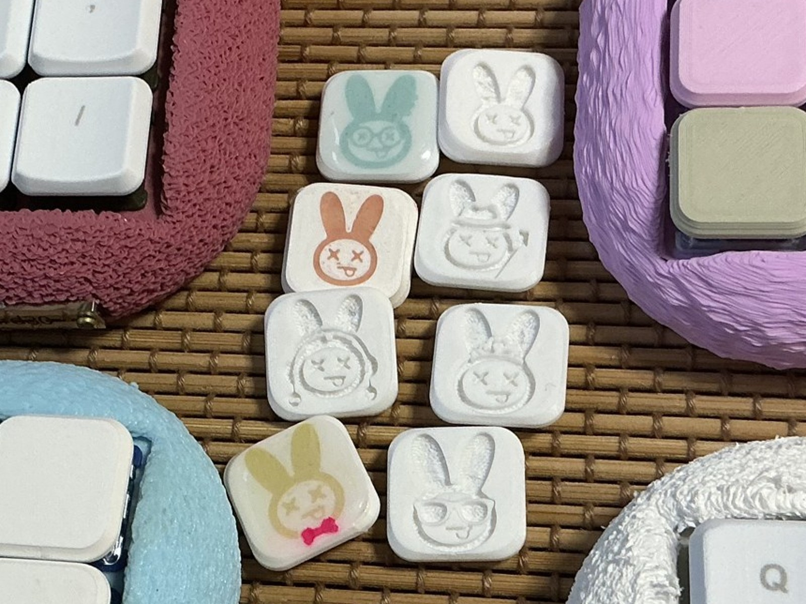

03


📷




📷← → で めくってね
※アプリは これからも こうしんして よくしていくよ。がめんは いまの ものと ちがうことが あるよ


📷※ キースイッチ+キーキャップのセット(+5,000円)を 購入していただいた方のみ
うさぎ彫りのキーキャップ、ケースの底の色、電源スイッチ、ネームプレートの色・デザイン・素材も、せいさくしゃが そのとき かわいいと思ったもので(素材によって おねだんも変わります)。
おねだんは 材料や つくり方で 上がることがあります。